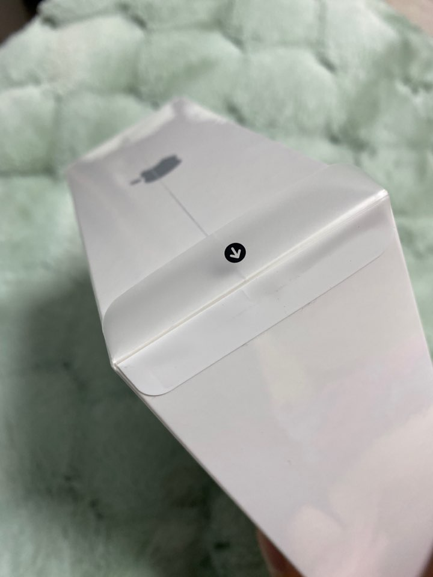

NOTHING SPECIAL.
no, it's a lie. I finally kicked off working few days ago.I remember the nervous, exciting, dizzy, worrying, wondering, and dazed feelings.
Still, there's room for an improvement.

I have received iPad mini~~~ and now it's in my backpack.
it was surprisngly SMALL, and very cute.
I'm super-satisfied but
- the size of the display is quite small, almost same as iPhone 11 (when watching a content).
- rumors about NEW 9inch iPad mini... did I make a right choice??
HomePod had arrived btw. but it's still unpacked